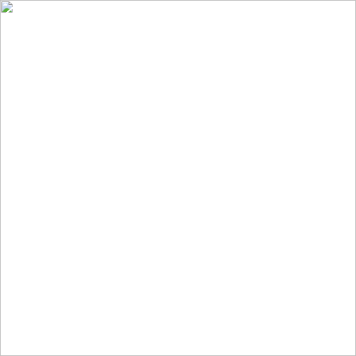
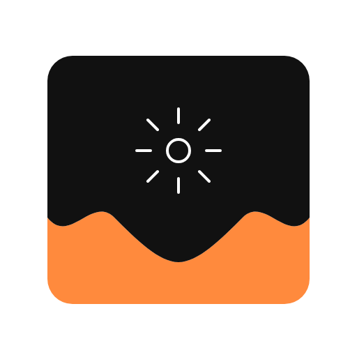
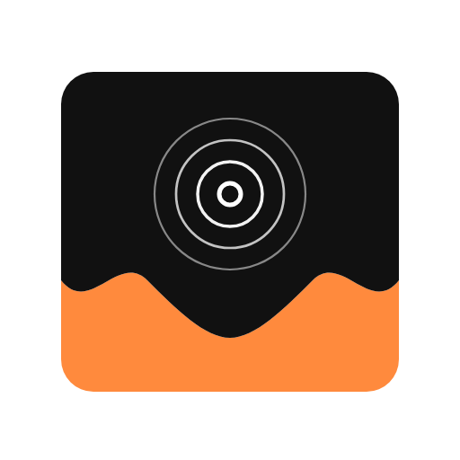

Ίδια βάση (solid + ember). Μέσα στο μαύρο: fine lines από την ετυμολογία και τη φωσφορίζουσα οθόνη — όχι ασπίδα.
Word map
φως → ακτίνα, σπινθήρας, φωτόνιο, άλω / corona, φακός–διάφραγμα · phosphor → OLED subpixel triad · φ (phi) → άμεσο γράμμα από την ελληνική ρίζα · δέσμη προς το tide (φως που «βάφει» τη μπάρα)

1 · φ (phi)Άμεσο σήμα από φως / phos

2 · Spark / raysΕκπομπή φωτός, φωτόνιο

3 · CoronaΦωσφορισμός — άλω που σβήνει4 · Phosphor triadOLED emitters / subpixels5 · ApertureΦως που μπαίνει στην οθόνη6 · BeamΔέσμη προς το tide / τη μπάρα